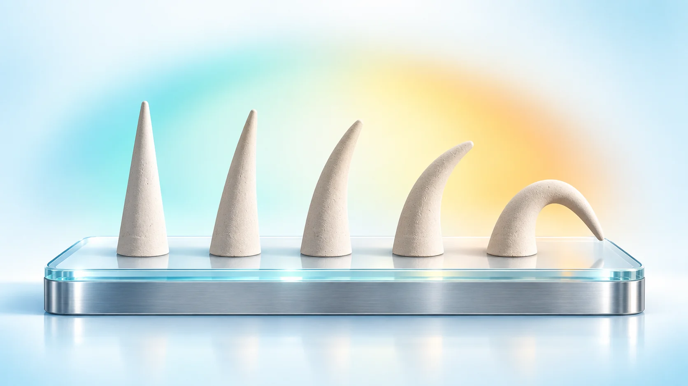
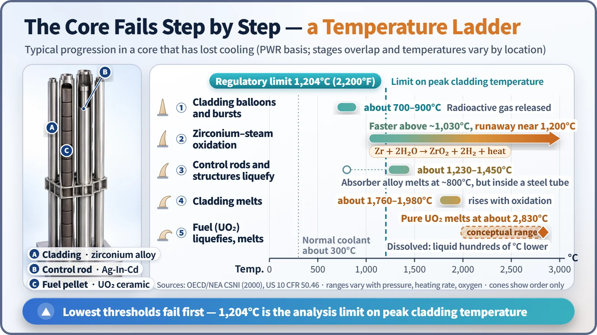
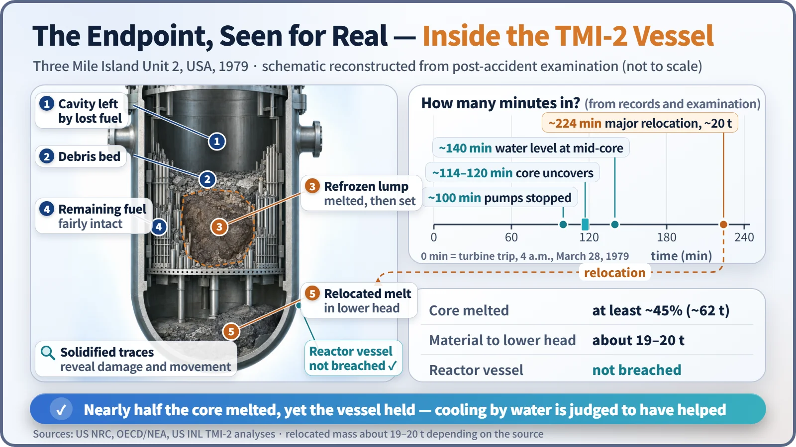

Safety Principles & Accident Analysis · 217
Like Cones Slumping in a Kiln — The Order in Which Core Damage Progresses
Each core material gives way at a different temperature. Knowing the order shows where there is still time to step in.

A core that has lost cooling does not melt all at once. Its materials fail one after another as the temperature climbs past each one's threshold. Cladding bursts first, oxidation then feeds itself, control rods and structures melt and run, and finally cladding and fuel melt and relocate downward. Because the order is known, there are points along the way where operators can still intervene. [1]
Cones in a kiln
Inside a potter's kiln you'll often find a row of finger-sized clay cones, called pyrometric cones, each made to bend and slump at a different temperature. After firing, the cones that have keeled over tell you how hot the kiln got.
A reactor core has a slumping order of its own, because each material in it gives way at a different temperature. Here is that order, threshold by threshold: the progression of core damage.
The starting line: fuel out of the water
If decay heat can't be carried away, the water boils down until the top of the fuel is left above the surface. Steam moves heat far less effectively than water, so uncovered fuel heats on decay heat alone by about 0.4 to 1°C per second, tens of degrees per minute. With coolant at around 300°C in normal operation, the first threshold is not far off. [1]

Cone one: the cladding balloons and bursts (about 700–900°C)
Fuel sits inside thin zirconium-alloy tubes called cladding. At roughly 700 to 900°C the tube softens, and the gas pressure inside can puff it up like a balloon until it bursts; the exact temperature depends on internal pressure and heating rate. Radioactive gases from the gap between fuel and tube then escape into the coolant for the first time. Core damage in the broad sense begins here. A "meltdown" refers to a much later stage, when things actually melt. [6]
Why a line was drawn at 1,204°C
Designers analyze an accident in which coolant leaks out and must show that peak cladding temperature stays at or below 1,204°C (2,200°F). That is the U.S. criterion in 10 CFR 50.46, and South Korea uses the same value. Cladding oxidation is also capped at 17% of its thickness. [2]
1,204°C is not a melting point. Above it, the reaction described next speeds up sharply and the cladding can turn brittle, like glass. It is a judgment line drawn with margin, so the sequence stops before that point.
Cone two: the metal feeds its own fire (around 1,200°C)
Hot zirconium reacts with steam:
Zr + 2H₂O → ZrO₂ + 2H₂ + heat
Zirconium strips the oxygen from steam, becoming an oxide layer and releasing hydrogen and heat: about 44 grams of hydrogen and about 6.5 MJ of heat per kilogram of zirconium. Above roughly 1,030°C the reaction speeds up, and in the 1,200s it accelerates itself with its own heat, pushing the heating rate well past 1°C per second. The metal starts throwing logs onto the ember of decay heat. [1]
Cone three: metals that melt before their melting point (about 1,230–1,450°C)
Salt on a winter road melts ice below freezing; likewise, different substances in contact can turn liquid below either one's own melting point. The silver-indium-cadmium control rod absorber actually melts at about 800°C, but it is sealed in a stainless steel tube that bursts at about 1,230 to 1,430°C (later at higher pressure). Stainless structures mix and melt where they touch zirconium, and stainless steel alone melts at about 1,450°C. The molten metal runs down, refreezes in cooler spots and blocks coolant channels, which then get even hotter. [1]
The last cones: cladding, then fuel (about 1,760–2,830°C)
Cladding alloy melts at about 1,760 to 1,980°C; the range is wide because the melting point rises as it oxidizes. Molten zirconium dissolves the uranium dioxide (UO₂) fuel, so fuel can turn liquid several hundred degrees below its own melting point of about 2,830°C.
The rods lose their shape. A hot mass of molten fuel and cladding oxides pools in the middle of the core inside a hard crust. If the crust breaks, the melt pours into the rounded bottom of the reactor vessel, the lower head. This is core relocation. [1]

The accident where the fallen cones were counted: TMI-2
In 1979, Three Mile Island Unit 2 in the United States showed this sequence for real.
| Item | TMI-2 |
|---|---|
| Core starts to uncover | about 2 hours after the start (about 114–120 minutes) |
| Major relocation to the lower head | about 224 minutes, roughly 20 tonnes |
| Core melted | about half (at least 45%, about 62 tonnes) |
| Reactor vessel | not breached |
Cooling by water is judged to have helped protect the vessel. The U.S. Nuclear Regulatory Commission concluded that no detectable health effects on the public were found. [3] [4] [5]
The core did not collapse all at once: the center and upper parts heated first, while edge fuel assemblies stayed comparatively intact. As the team removed the melted core, they checked which materials had melted and how far, and like slumped cones in a kiln, those traces became clues to the peak temperatures. Much of today's understanding of the late stages of core damage comes from that examination. [1]
Knowing the order means knowing where to step in
Unlike a kiln cone, a reactor gives you chances to intervene. The 1,204°C criterion aims to stop things near the bottom of the ladder from the design stage on, and even past that line, getting water back in can slow or halt the progression. The procedures operators use to choose their next step while watching core temperatures are built on this same sequence.
Key takeaways
Core damage progresses in order of temperature thresholds: cladding bursts (about 700–900°C), oxidation runs away (around 1,200°C), control rods and structures melt early (about 1,230–1,450°C), then cladding (about 1,760–1,980°C) and fuel melt and relocate. Knowing the temperature each material can withstand is how you read the time you have to protect the core.